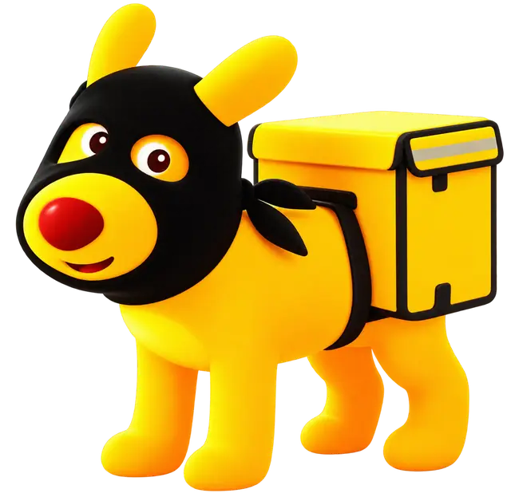

奶蛙正在靠岸…
奶蛙的海上商站 / TIDELINE
吃一份恢复 2 点体力；也可用于远航补给箱。
“出海、打捞、带回物资。做好这些，奖励归你。”
任务铺每小时补充到 3 个任务。完成后回到店里领取随机物资或金币。
“平台、建筑和制作都要有计划。完成清单，再来领取报酬。”
任务铺每小时补充到 3 个任务。未完成任务会保留，最多同时拥有 3 个。
“船、人、力气，我都替你看过了。付够金币，员工马上开工。”
自带一艘小船，每 10 分钟自动出海一次，返航时带回随机物资。
已招募 0 / 10
尚未组建船队
读取码头订单，在加工台自动逐级制作缺少的商品，备货完成后自动交付。
尚未安排自动加工
两类员工每人每 20 分钟消耗 1 份猪脚饭；没有猪脚饭时暂停工作，补充后自动恢复。手动停止工作时不会消耗猪脚饭，恢复后从原进度继续。
每次停靠都会带来不同库存和价格，十分钟后离港。
“未实装”商品仅作后续内容预告，本次不可购买。

一次填写购买与售卖数量，确认后由肥嘟嘟统一配送结算。
每次只能提交一个配送任务，耗时随机 3～5 分钟。提交后物资和应付金币会立即锁定，配送完成后收到购买物资及结余金币。
当前进度会替换成一座新的浮岛。也可以先下载一份存档备份。
同行时每次成功随机打捞获得 1 点经验，满经验自动升级，最高 10 级。数量加成按概率取整，仍受原料仓容量限制。海面直接拾取不享受加成。
精良货物 0 · 稀有货物 0
背包有优质货物时，远行商可能带来收购订单：精良 24 金 / 件，稀有 60 金 / 件。
每栋宿舍有 2 个床位。入住伙伴每 30 分钟获得 1 点经验，关闭游戏后仍会继续成长。
选择下方“宿舍”，在空平台上建造后即可安置伙伴。
入住后开始成长